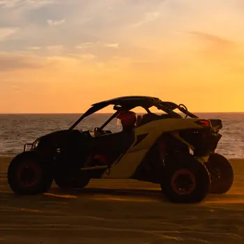

Scooters
Experience the freedom of Cozumel with our easy-to-ride motor scooters. Perfect for navigating
the
island's streets, our scooters offer a fun and efficient way to explore both popular
destinations
and hidden gems. Whether you're zipping through town or cruising along the coast, our scooters
provide the ultimate island adventure.

ATVs
Discover the rugged beauty of Cozumel's landscapes with our side-by-side ATVs. Built for
adventure,
these vehicles allow you to traverse the island's trails, beaches, and off-road paths with ease.
Ideal for thrill-seekers and nature lovers, our ATVs offer a unique way to explore the island's
diverse terrain.
Jeeps
Explore Cozumel in style and comfort with our versatile jeeps. Perfect for families and groups,
our
jeeps provide ample space and robust performance for all your island adventures. From scenic
drives
along the coastline to off-road excursions, our jeeps are the ideal choice for a memorable and
enjoyable journey.